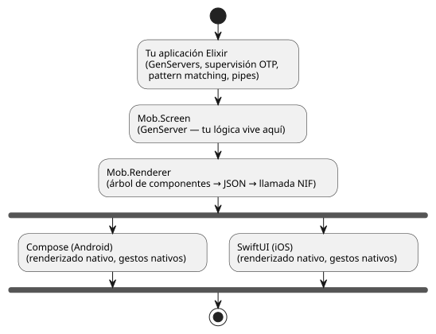

Introducción a Mob
Una aplicación móvil se comunica con un servidor, maneja notificaciones push mientras está en segundo plano, gestiona el estado local, transmite datos, procesa la entrada del usuario — todo de forma concurrente, todo el tiempo. La mayoría de los frameworks fingen que esto no es cierto y te obligan a ensamblarlo todo a partir de callbacks, promesas, máquinas de estados y trabajadores en segundo plano. Pasas más tiempo cableando la fontanería de la concurrencia que construyendo tu aplicación.
El BEAM fue diseñado en 1986 para centrales telefónicas — sistemas que manejan millones de conexiones concurrentes, nunca fallan y se actualizan a sí mismos mientras están en funcionamiento. No obtuvo estas propiedades por accidente. Son el objetivo principal. Cuando ejecutas el BEAM en un teléfono, lo obtienes todo.
Mob es un framework móvil BEAM-on-device para Elixir. OTP se ejecuta dentro de tus aplicaciones iOS y Android — incrustado directamente en el paquete de la aplicación, sin necesidad de servidor. Las pantallas son GenServers; la interfaz de usuario se renderiza mediante Compose y SwiftUI a través de una NIF delgada.

Ejemplo
El siguiente código crea una aplicación con un WebView.
defmodule MyApp.WebViewScreen do
use Mob.Screen
def mount(_params, _session, socket) do
{:ok, Mob.Socket.assign(socket, last_msg: nil)}
end
def render(assigns) do
~MOB"""
<Column background={:background} fill_width={true} fill_height={true}>
<Text text="WebView" text_size={:lg} text_color={:on_surface} padding={:space_md} />
{status_row(assigns)}
<WebView url="https://www.google.com" show_url={true} weight={1} />
</Column>
"""
end
defp status_row(%{last_msg: nil}) do
~MOB(<Text text="Waiting for JS bridge event..." text_size={:sm} text_color={:muted} padding={:space_sm} />)
end
defp status_row(%{last_msg: msg}) do
text = "JS->Elixir: #{inspect(msg)}"
~MOB(<Text text={text} text_size={:sm} text_color={:primary} padding={:space_sm} />)
end
def handle_info({:webview, :message, data}, socket) do
socket = Mob.WebView.post_message(socket, %{"echo" => data})
{:noreply, Mob.Socket.assign(socket, last_msg: data)}
end
def handle_info(_msg, socket), do: {:noreply, socket}
end